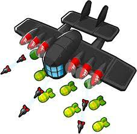
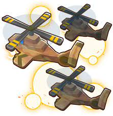

As torres militares são a segunda classe de torres que você desbloqueia no jogo, elas são úteis para causar dano no solo, na água e até mesmo nos céus.
O macaco sniper é a primeira torre que você recebe quando desbloqueia a classe militar. O alcance dele é o mapa inteiro, porém, se tiver uma parede ou obstáculo na sua frente ele não enxergará.
| Caminhos | Vantagens |
|---|---|
| O caminho de cima do macaco sniper faz com que ele cause dano extra a bloons classe MOAB e os atordoe, causando fraqueza no processo. | |
| O caminho do meio do macaco sniper faz com que ele ganhe visão de bloons camuflados, seus tiros ricocheteiam e ganha a habilidade ativável que faz cair um pacote de suprimentos do céu. | |
| O caminho de baixo do macaco sniper faz com que ele ganhe uma sniper automática que dispara super rápido, causando imenso dano a bloons classe MOAB e ganhando velocidade de ataque sempre que um bloon passar. |
O macaco sub é uma torre que só pode ficar na água, embora algumas melhorias façam ele parecer uma torre de suporte, seus tiros teleguiados são muito úteis no começo do jogo.
| Caminhos | Vantagens |
|---|---|
| O caminho de cima do macaco sub transforma o submarino em um reator núclear que estoura os bloons em seu raio, reduz o intervalo de habilidades de macacos marinhos e aumenta os pontos de experiência ganhos para os heróis. | |
| O caminho do meio do macaco sub possuí a habilidade passiva de: cada vez que um MOAB aparece na tela, ele libera uma rajada de mísseis. Também libera uma habilidade ativável que lança um míssil ao maior bloon da tela, causando dano explosivo ao redor. | |
| O caminho de baixo do macaco sub faz com que o macaco sub se torne um Sub Comandante, aumentando o poder de estouro e perfuração a todos os macacos sub no seu raio. |
O macaco bucaneiro fica em um barco que dispara dardos para duas direções opostas. Também só pode ser posto na água.
| Caminhos | Vantagens |
|---|---|
| A melhoria de cima do macaco bucaneiro é um navio que possuí dois espaços para posicionar outras torres terrestres. Também possuí um porta aviões, aviões esses que ficam voando em volta do mapa atirando pequenos dardos. | |
| A melhoria do meio do macaco bucaneiro transforma ele no rei dos piratas, ganhando três canhões de cada lado do navio e a habilidade ativável de puxar MOABs para o fundo do oceano, saqueando dinheiro deles no processo. | |
| O caminho de baixo macaco bucaneiro possuí a capacidade de gerar grandes quantidades de dinheiro a cada rodada, e também aumenta a receita de outros macacos bucaneiros do caminho de baixo e fazendas de bananas. Também faz as torres valerem mais na venda. |
O macaco Ás é um avião que voa em círculos atirando dardos em todas as direções.
| Caminhos | Vantagens |
|---|---|
| O caminho de cima do macaco Ás é um caça militar que dispara dartos super rápido e mísseis em bloons classe MOAB. | |
| O caminho do meio do macaco Ás é um avião cinza que libera bombas na pista ao fazer sua rota. Também libera a habilidade ativável de liberar uma bomba imensa que atinge a tela toda, causando imenso dano a bloons classe MOAB. | |
|  | O caminho de baixo do macaco Ás é um avião gigante que dispara dardos e mísseis de forma alternada aos alvos priorizados. |
O helicóptero é uma torre que segue o cursor do mouse e dispara dois dardos contra bloons próximos.
| Caminhos | Vantagens |
|---|---|
| O caminho de cima do helicóptero o transforma em uma máquina de aniquilar bloons, estourando vários bloons por disparo e causando imenso dano a bloons classe MOAB com seus mísseis. | |
| O caminho do meio do helicóptero ganha três habilidades ativáveis, a primeira libera duas caixas de suprimento contendo vida e dinheiro, a segunda permite o helicóptero reposicionar torres e a terceira permite ao jogador posicionar um macaco fuzileiro por algumas rodadas. | |
|  | O caminho de baixo do helicóptero possuí a habilidade de empurrar alguns bloons classe MOAB e também chama mais dois helicópteros menores para ajudar a estourar os bloons. |
O morteiro é uma torre que dispara um tiro de morteiro em um lugar específico escolhido pelo jogador.
| Caminhos | Vantagens |
|---|---|
| O caminho de cima do morteiro faz com que ele estoure várias camadas por disparo em um raio enorme. | |
| O caminho do meio do morteiro faz com que ele ganhe dois novos morteiros, disparando alternadamente um de cada vez em uma alta velocidade, também libera a habilidade ativável de disparar muito rápido no local escolhido por um curto período. | |
| O caminho de baixo do morteiro faz com que ele queime os bloons, causando grande dano por segundo, remova camuflagem e fortificação dos menores bloons. |
A arma de dardos dispara em uma linha reta com uma metralhadora de dardos, ele pode atirar em um ponto fixo ou seguir o mouso do jogador.
| Caminhos | Vantagens |
|---|---|
| O caminho de cima da arma de dardos faz com que ele dispare um laser de grande grossura que estoura a maioria dos bloons com facilidade. | |
| O caminho do meio da arma de dardos faz com que ele se torne um robô aniquilador de MOABs, ganhando uma habilidade ativável que dispara fortes mísseis em uma linha reta causando extremo dano a bloons classe MOAB. | |
| O caminho de baixo da arma de dardos faz com que ela possa operar de forma automática disparando pesadas bolas de chumbo de seis canos contra os bloons, causando imenso dano. |